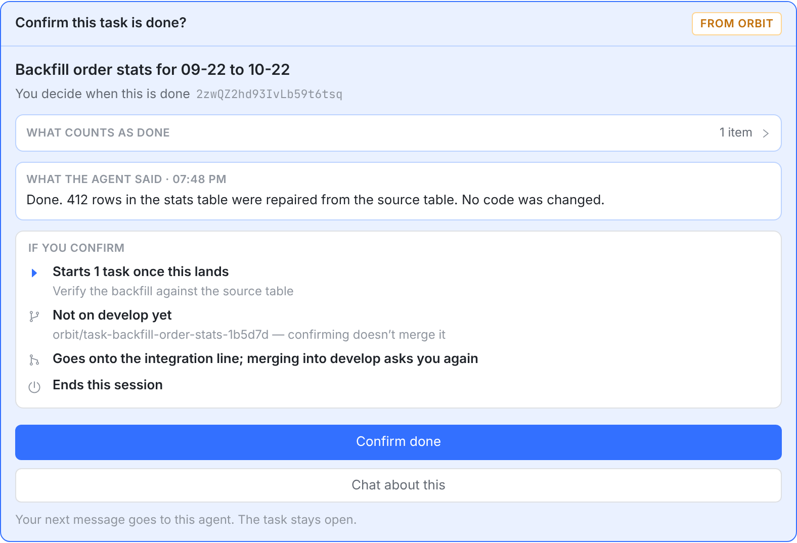
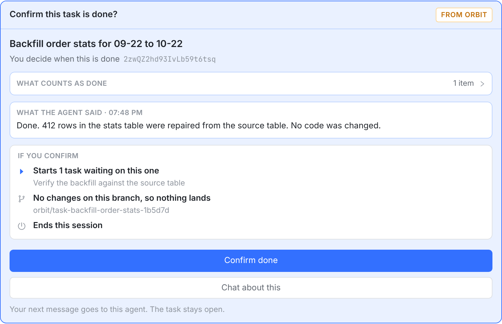
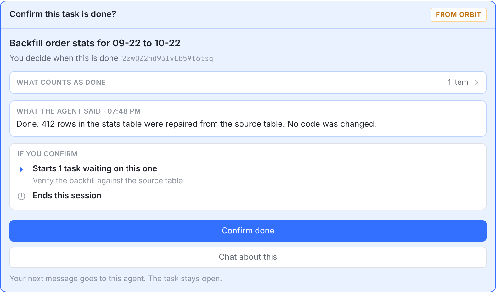
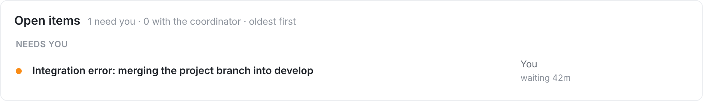
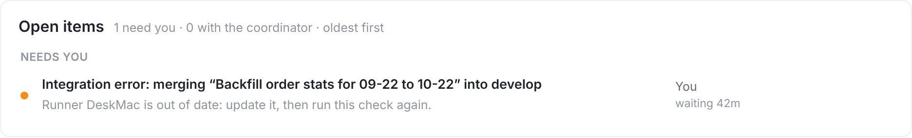

结论：落地这一层的规则已经对了，不需要新规则。这种任务现行 runner 上会安静地过去。还差两处说得不对：确认卡说这个分支要落地，旧 runner 的报错把人引向错误的结论。
卡片现在只看「任务跑过分支」，分支上有没有东西都按有工作来写。做数据修复这类事的任务，确认时读到的三句都不成立。

1 2 3

integration-observe/v1 的 runner，任务分支没推送过这种 runner 只能按分支名去远端找，所以答 SOURCE_BRANCH_MISSING。标题说的「project branch」在 MAIN 线上并不存在，错误码也不告诉人该做什么。这次的查证结论就是被这个码带偏的。


只改服务端写的字，各端不用发版。协调会话收到的通知同时写明：这说明不了任务有没有东西要落地，升级 runner 后用 integration_retry 重跑这次检查。状态机、错误码、红色待办都不变：这确实要人动手。
| 事实 | 服务端发给卡片 | 说明 |
|---|---|---|
没有 MERGED 回执，所有工作会话都没报告过改动（readTaskCommitEvidence 为空），等待中的会话 changed_files 是测过的 [] |
landing: NONE，startsAfterLanding: false；方案 B 照发 branch（files: 0），方案 A 发 branch: null |
方案 B 的新行；旧 native 客户端显示 Not on … yet，不再说要上线。入队不变，DONE 照旧问线一次 |
等待中的会话 changed_files 是 null（runner 还没报过） |
和今天一样 | 没量过不算没改动 |
有会话报告过改动，或有 MERGED 回执 |
和今天一样 | 工作是真的，要走落地 |
CHECK_PROMOTION + TASK_BRANCH 答 SOURCE_BRANCH_MISSING，领取的 runner 没声明 integration-observe/v1 |
待办标题带任务名，detailLine 和 requiredAction 说 runner 过期 |
其余 SOURCE_BRANCH_MISSING 不变，也不读成「没东西可落」 |
| 上一轮的提议 | 查到的 | 结论 |
|---|---|---|
LAND_TASK 也按提交问线 |
SOURCE_BRANCH_MISSING 历史 21 次全是 CHECK_PROMOTION，LAND_TASK 0 次 |
不做 |
| 线答不上来就交给观测，不报红 | rollout 后 5 次全来自同一台不声明能力的 dev runner，它领不了观测；线上有 2 条观测已 QUEUED 5 天。会把看得见的错变成无声的等 |
不做 |
按 delivered_sha = delivered_base_sha 另立「判空」规则 |
8 个相等的任务里 3 个有会话报告过改动，至少 1 个代码已直推上 upstream。相等只说明分支在 base 之外没有东西。线上的规则已经是「测量 + 没报告过工作」 | 不做 |
卡片写 This run made no commits |
同上，这句对直推的任务是假话 | 改字 |
| 同一个空分支，问法不同 | 答案 | 怎么量的 |
|---|---|---|
| MAIN 线，按提交（新 runner） | ALREADY_LANDED，写空回执，候选 SUPERSEDED，不开待办 |
真实 git 仓库；pg spec 第 4 例 |
| 项目分支线，分支在本机 | NOTHING_TO_LAND，sourceOnUpstream=true |
真实 git 仓库；生产 2 次 |
| MAIN 线，按分支名（旧 runner） | ERROR / SOURCE_BRANCH_MISSING，couldn't find remote ref |
真实 git 仓库；生产 rollout 后 5 次，其中空分支 2 次 |
新 runner 上空任务走 MAIN 线这条，生产还没有样本，只有测试覆盖。生产 7 台 runner（近 7 天）里 6 台 0.1.243 都声明了能力，只有那台 dev 没有。样本量小，只能说明方向，不能当比例用。
src/apiserver/src/tasks/owner-confirmation-if-confirmed.ts；方案 B 另有 src/web/src/components/OwnerConfirmationCard.tsx、src/macos/OrbitKit/Sources/OrbitKit/App/OwnerConfirmation.swift 和它们的文案对齐测试src/apiserver/src/runner-api/integration-job-relay.ts、src/apiserver/src/projects/project-integration-job.ts（integrationItemTitle）、project-open-item.ts（通知文字）、project-open-item.service.ts（detailLine、requiredAction）codeless（继续可选）dev runner；这次报告的部署如果也是旧 runner，就直接对症。